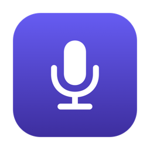
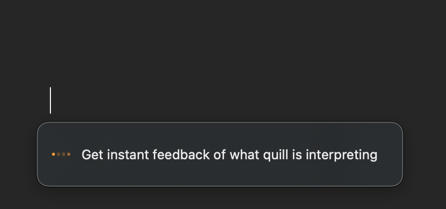
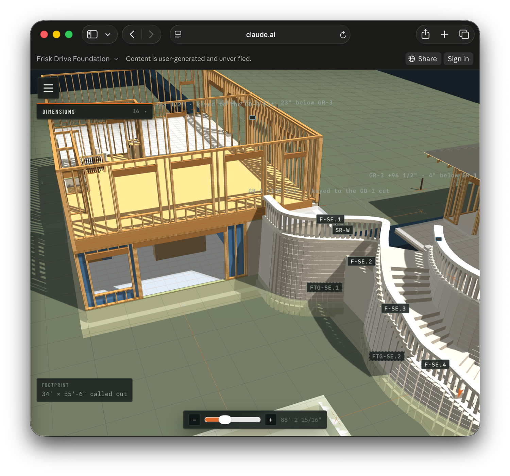
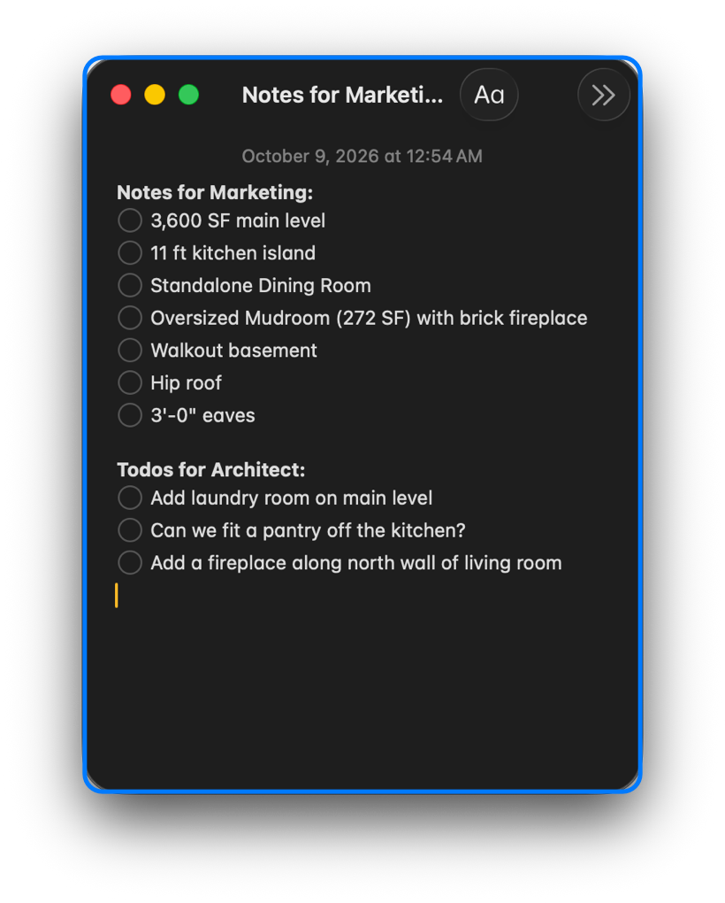
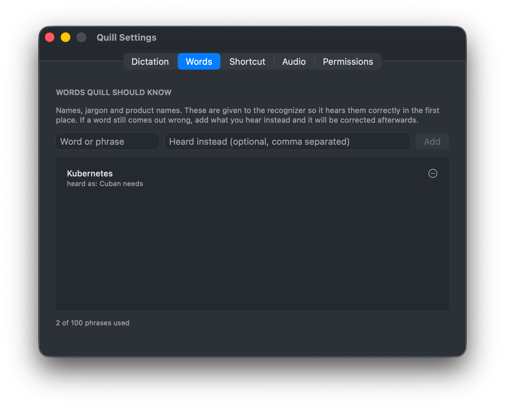
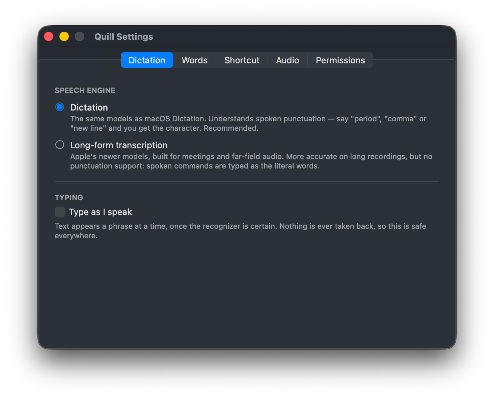

Hold a key, speak, and the words land wherever you're typing.
On-device. No subscription. No account. Nothing leaves your Mac.
Download for macOSApple's engine is good. The way you have to use it isn't, and none of it is configurable.
Apple Dictation is toggle-only, and on a MacBook press-and-hold is already Siri's. Quill lets you hold any modifier and speak — or double-tap it to stay hands-free.
Apple Dictation dies the moment you click into another window. Quill keeps going and the words follow your cursor into whatever you clicked.
Apple cuts you off after thirty seconds of silence, sometimes dropping the last thing you said. Quill stops when you stop.
Add names, jargon and product names and the recognizer is told about them, so it hears them right the first time rather than being corrected afterwards.

Keyboard and mouse focus
on the foreground window


Dictation focus pinned
to another window

